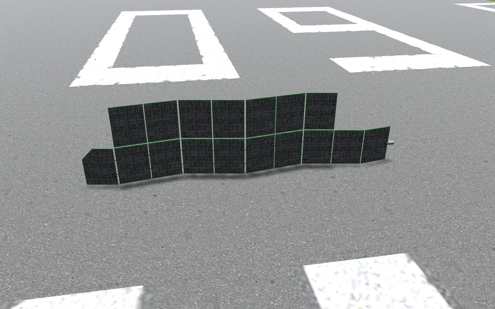
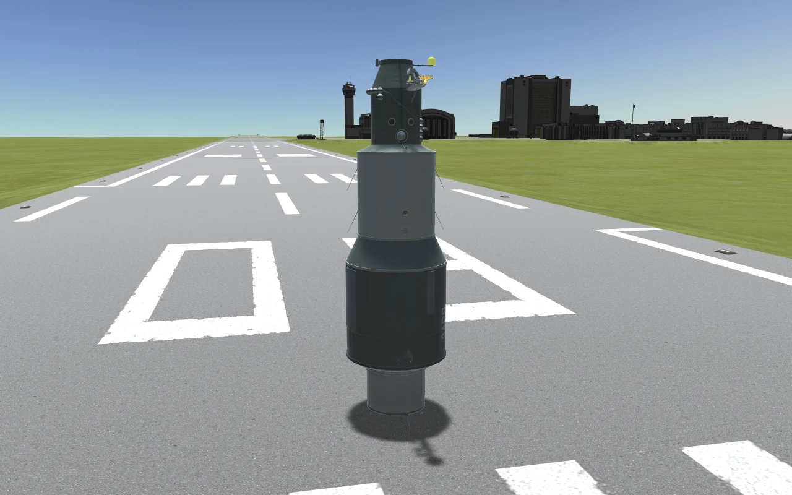
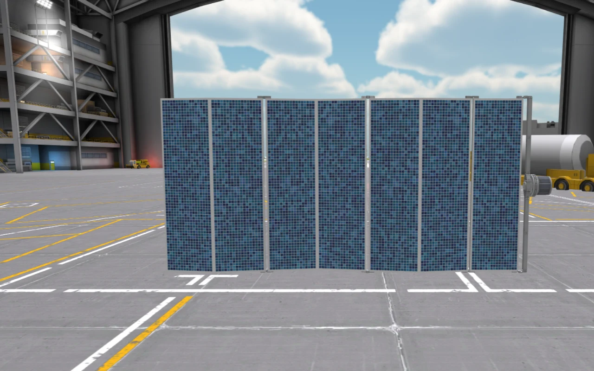
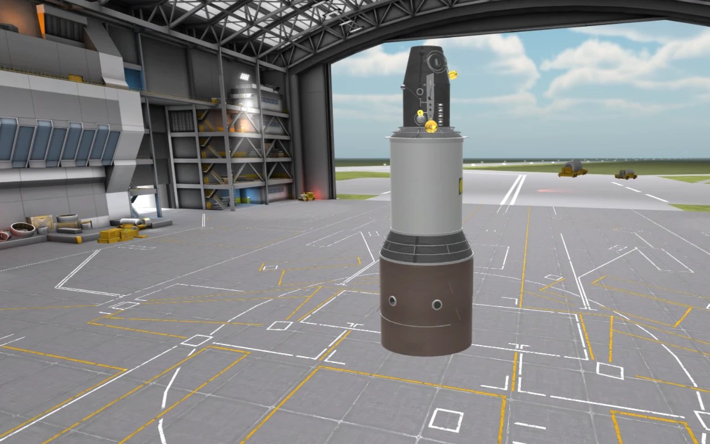
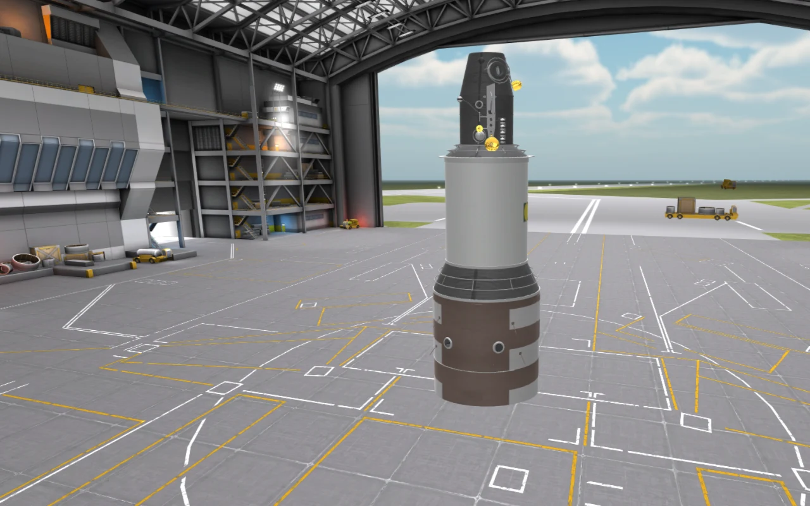

← Back to supported mods
Parts
Almaz 2/3/5
Almaz Left Solar Array


Almaz OPS-4
Almaz Right Solar Array
Salyut 1 Left Solar Array
Salyut 1 Right Solar Array
Salyut 1/4


Salyut 4&6 Solar Array


Salyut 4/6 Solar Array
Salyut 6


Salyut 7
